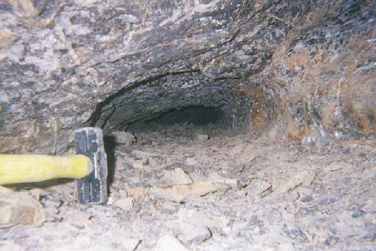
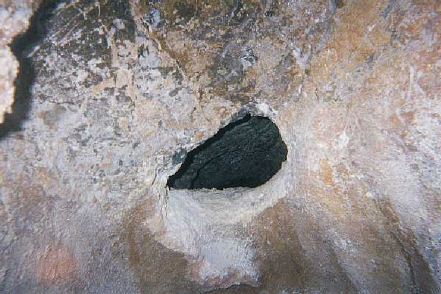
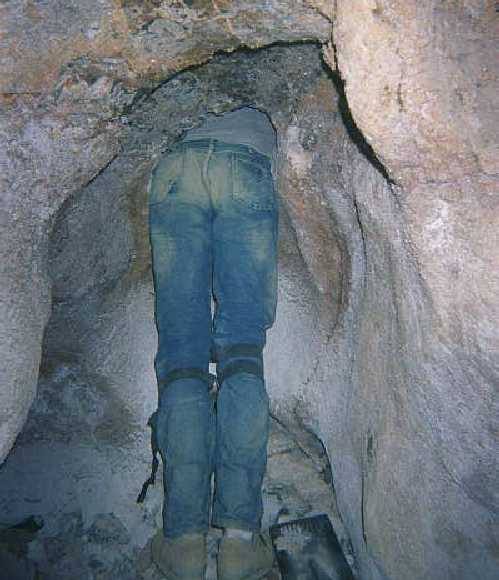
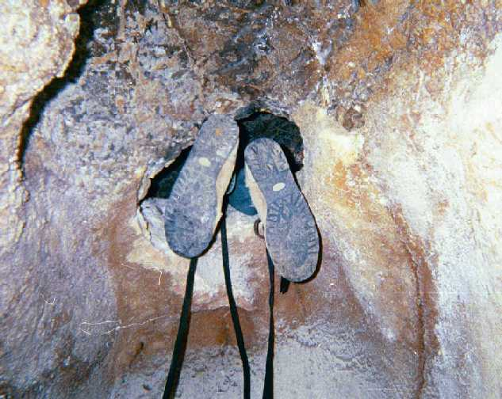
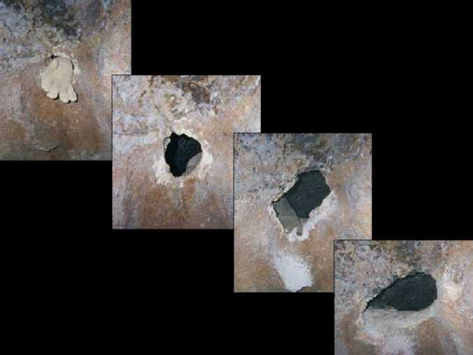

March 3-4, 2001
It took us three weeks before we got back out to Mystery Cave again. Our attitudes have changed a bit since we first started the project. In the beginning we looked at the whole thing as a fun adventure. Since the last trip out we found ourselves taking a more serious approach. On the drive out this time our conversation was a little more subdued than before. We hadn't talked much since the last trip (not for any reason but scheduling conflicts). Instead of discussing ways of getting through the passage, we found ourselves talking about rational explanations for what had happened. Neither one of us had any ideas that would explain the unusual occurrences we experienced on the last trip. We were amused to find out that neither one of us had talked much about the last trip to other people. That is a complete reversal from the other trips. It has been fun to report to friends and family about our progress. It is always fun to tell people about the tight squeeze we are going to have to go through to get into the passage. Most people have little desire to voluntarily subject themselves to incredibly tight places. Actually neither do I, but I will do it in order to get to the other side. Good motivation.
We left town early in the afternoon to beat traffic. I don't really recall what time we finally got to the cave. Like I said, the mood was subdued. We got rigged up and started down. Obviously B left the dog home this time. We took essentially the same gear as the last time. We left some of the tools in the hole to save our backs the agony of hauling the extra weight. Even with the gear we got down in good time. We really have a good system for getting up and down. There was only one minor mishap this trip. B scraped his arm on the descent. Not real bad, fortunately. He waited until we got all the way to the hole to patch it up. It was just a superficial cut. While he was getting the wound cleaned up I started working. We both took note that the breeze was back and the rumbling present. We had four fresh batteries and four (or maybe 3 1/2) fresh arms. I had high hopes this would be the day. It started out pretty slow. When we first started working on the hole the thickness was about 3 inches. As we have enlarged the hole the thickness has increased. As a result our progress has become slower. Still, we continued with as much energy as we could put into the work. The hole was big enough, at least, for me to put the hammer into the hole for reference, then put the camera into the hole and take a picture of Floyd's Tomb.

It is difficult get the exact feel of the Tomb, but the lowest point, near the back of the picture, is about 7 inches high. The width is about 20-24 inches. The hammer is a small 5 lb. sledge. Note the abundance of rock on the passage floor.
It's been nice to see the pile of broken rock below the hole get bigger and bigger. We have both realized that we are just going to have to put in a certain amount of work in order to get through, so we just get down to business. We don't usually talk much while we work, since one of us is making a lot of noise with the drill or hammer. Break times are used to chat momentarily about what ever topic pops into mind. The breaks take place whenever the guy that's working decides to switch roles. We both put in some pretty good work sessions. I have a little more stamina than B, but he gets just as much done in a shorter amount of time, due to his upper body strength. We still celebrate the small victories we encounter along the way. Whenever a section we've been working on crumbles, we cheer. On the rare occasion that a fist-size rock falls from the entrance, we whoop and holler. That's one small chunk of earth that no longer separates us from... whatever lies on the other side. I still harbor the fantasy that there is a hidden entrance to the other side of the passage and years ago Spanish explorers hid their treasures in the cave and sealed up the entrance. And it has remained untouched until we find it! B has a more realistic, although more mundane theory. He figures there is more cave on the other side. We'll see who is right.
This trip out I wanted to see if we could speed up the work by using larger masonry bits. I purchased some good sized ones at the hardware store (at a good sized price). One was larger in diameter than all the rest. The other was smaller around, but longer. I had pretty much concluded that the big one might be too big, and I was right. We tried to get it to go into the rock but progress was very slow. We tried pushing for all we were worth and all we got was tired. The larger bit just created too much friction area for our strength. It might have worked with a hammer-drill, but we didn't have one. The longer bit worked fine with our drill. We relied on it for most of the work we did this trip. I thought we were going to be out one bit, and a drill and my hand, when the bit broke off toward one end. I was pushing as hard as I could on the drill with the bit a few inches in the wall, when it snapped. I nearly rammed the drill through the wall from pushing so hard. We were able to retrieve the bit and keep using it, minus a couple inches. It still worked great. Only once in a great while did we resort to hammer and chisel. Work was proceeding as normal, until about the time we were on our fourth battery.
I was kneeling down and working the drill slowly into the wall at the time. I had my ear plugs in, my safety glasses on, and was lost in my own thoughts. Suddenly, over the squeal of the drill wearing down the rock, I heard a strange noise. It was loud. I could hear it over the noise of the drill, even though I had the ear plugs in. At first I thought it was just the drill bit doing its job on the cave. It would frequently complain by screeching and whining as we forced it into the wall. But this was different. It took me several full seconds to comprehend that this was coming from inside the hole, and not the bit. I stopped drilling and yanked my earplugs out just in time to hear the most terrible scream I have ever heard trail off and echo into the darkness of the cavern. I stared wide-eyed at the hole. For several moments I didn't move, nor did I breathe. I turned to look at B. Moments earlier he had been lying on the rope bag catching a nap. Now, he was standing upright, mouth open, with a look of concern on his face! I turned and looked into the hole again, half expecting to see a demon face staring back at me. Nothing was different in Floyd's Tomb. I fixed my gaze on the back of the squeeze, where the limits of my light reached. There was no motion, only darkness beyond the reaches of my light. In the complete silence that followed I could hear my heart pounding in my ears. Not another sound could be heard in the cave. Suddenly I heard a scraping noise behind me and straightened up. I nearly knocked myself out hitting my head on the overhang. It was just B moving to turn on his light but I was so wired it nearly sent me to my grave. B spoke and again I jumped. He said to get some rocks and put them into the hole. He explained that whatever animal had made that noise might be able to get through the hole. I immediately grabbed a few rocks and hoisted them through the opening. Using the handle of the sledge hammer I slid the rocks as far back into the tunnel as I could reach, creating a wall between us and the other side. Since the squeeze is so small it didn't take long. The entire time I was doing this, however, I was thinking that the noise certainly did not come from an animal! I didn't know if B really thought it was, or if he was just trying to convince himself. I didn't say anything to him about what I thought.
From the time it happened, to the writing of this journal entry (two days later) I have tried to come up with some possible source for such a noise. To describe it I would say it sounded like a cross between a man screaming in fear, and a cougar screaming in pain. It sounded like it came from the hole and was roughly 100 feet away. The horrific noise reverberated through the cave, and through my ears. B estimated the scream lasted 8-10 seconds. My best guess is about 5 seconds. (3 seconds while I was drilling, one and 1/2 seconds to drop the drill and yank the ear plugs, and 1/2 second of shear terror) It's difficult to tell how much time passes when you're listening to a solo from the depths of Hades.
After I filled the back of the passage with rocks we just sat there listening to the silence. My breathing was a lot more rapid than usual. Neither of us spoke for quite some time. Finally B suggested we get back to work, but keep an eye out for movement in the hole. We put a light in the passage that shined to the back of Floyd's Tomb. It was only at this point that we realized the wind had stopped again and the rumbling could no longer be heard. To say I was nervous would be an understatement. I didn't say anything to B, nor him to me. Back to the drilling. B took over the work, which was fine with me. I wasn't exactly worn out, but I didn't mind being further from the hole. B would stop from time to time and listen. I just sat, watching him, with my light on. I wasn't close to the entrance to the hole, but I still found myself looking behind me down the passage to the still water. Every time my light would cast an unusual shadow my heart would jump. My imagination was running wild. Oddly, B seemed to be less concerned about the strange noise than me. After a short time he seemed to be focused entirely on getting through the passage. I was still straining to listen above the sound of the drill. I heard nothing but the now familiar sound of carbide on stone. As I contemplated the possible scenarios which might play out on the other side of the passage I found myself strangely
getting somewhat excited again about getting through. It might have been fatigue taking its toll on my mind. Or the thought of something valuable on the other side.
My thoughts were broken when B let out a yell. Possibly a cuss word. He said the drill battery was dying, but he hadn't quite broken off a large (relative) section he was working on. He set the useless drill aside and picked up a hammer and bullpin. He started wailing away at the hole created by the bit. After nearly ten solid minutes of hammering he sat back against the rock, sweating and nearly out of breath. The bullpin was still protruding from the cave wall. He held the hammer toward me, inviting me to take a few swings. I held up my hand and shook my head. I had been ready to exit this cave for quite awhile now. He didn't press the issue, and without speaking we both started gathering the gear we were going to take out. Once again we stashed some of the tools in the passage. I was first to start toward the top of the cave. Several times I had to stop and wait for B. Not because he was moving slow. I was just more than eager to get out. Few times have I felt better than that night, stepping out into the chilly night air.
February 13
It's amazing what a couple good meals and a little sleep can do for someone's attitude. Even though we still had memories of the strange noise fresh in our minds, we relit our fire of enthusiasm. The other side of the passage seemed so close. We were sure this would be the day. We got to the cave and started to work our way down to the hole. Getting back into the darkness of the cave brought back the memories of the night before. The sight of the circle of rock illuminated by our headlamps, the smell of dirt in the air, the sound we made as we crawl across the rock. Once we reached the entrance to Floyd's Tomb, however, we were once again ready to blaze the trail leading to an undiscovered part of the cave. We immediately noted the presence of the breeze blowing out of the hole, and the rumbling.
The bullpin sticking out of its hole was an obvious sign of where we needed to begin work for the day. B took over where he left off the day before. I took up residence in the same spot I occupied the night before, even though I was already well rested and wanting to start work. B was making the hammer sing with each blow. After a mere 2 or 3 minutes he let out a cheer. He turned to reveal a handful of rock that used to be attached to the cave. He was breathing heavy, but had a big smile on his face. So did I. For the time the strange noise had been forgotten, and the vision of success captured our attention.

the size of the opening at this point.
The lower left-hand corner of the hole had been giving us grief because of the thickness of the wall at that point. We felt that if we could just remove that corner, we might be on our way inside. B now held in his hand the crumbled remains of the corner. Our excitement consumed us as we examined the hole. I took the hammer and pounded away at the surface of the hole. The idea was to remove the jagged edges that would take their toll on my skin. The size looked right! Now, the moment we had been working for.
I cautiously approached the entrance to Floyd's Tomb. I decided the best way to enter the small hole was to place one arm over my head, turn my head sideways, and slowly work my way in. I soon determined this was not going to work. The hole was SMALL. If I was going to make it in without widening the hole any more, I was going to have to put both arms over my head, in a diving position, turn my head sideways, and "slip" into the Tomb. The width of the entrance was the limiting factor. The height was sufficient. The arms-overhead position flared my shoulder blades out, but there was still room to get in. Plus, the arms-overhead gave me the best squeeze side to side.
In order to enter straight into the hole I stood on my feet and bent over to get level with the entrance. My knees were bent and the position was uncomfortable, sort of a semi-squatting position, bent at the waist with arms overhead. Plus, I had to slightly turn my upper torso to the left, in a counter-clockwise rotation, to negotiate the angle of the entrance.
I got my arms through the entrance with minor scrapes. Next came my head. By keeping it turned sideways I was able to get it in, for the most part, up to my shoulders. When I got to my shoulders I could feel the rocks touching all around my shoulders and chest. It was not stopping me, but I was definitely scraping many surfaces of my body. I decided to just push through, keeping in mind that I was going to have to come back out eventually. The pain was not too bad, and I was IN! Well, my upper body was in. At least I could get a good idea what the Tomb was going to be like.

Here's a flattering photo of my best side. Notice the size of the area we had to work in. The ledge overhead was an obstacle.
Once inside the Tomb I had a few inches all around me in which to position my body. This was the largest part of the passage, and it was conveniently located right at the beginning of the crawl. That gave me a little room to get positioned to crawl further into the passage. Inside the Tomb gave me a whole new outlook of what it was going to be like to crawl through. Even though this was the largest part of the crawl it was still small. I could move my head around freely, but every direction that I turned I was staring at a wall of solid rock. When I spoke to B my voice sounded muffled, like I was talking in a small box. I could rest my chest on the passage floor, but the rocks were uncomfortable. I turned my head to look further ahead, but couldn't see past the wall of rocks I had built the day before. The squeeze toward the end of the passage was closer now, and appeared even narrower. I didn't know if I could squeeze through or not. I knew it would be close. I wanted to crawl further into the passage. First, however, I had to work to get some of the loose rocks that were lying on the passage floor out of my way. I was disappointed to find out that most of the rocks that looked loose were actually attached to the floor. I was hoping to be able to just scrape them out of the way. I had pushed the sledge hammer into the passage before me, so at this point I used it to push the rock "wall" we had made further back in the passage. Then I dragged the sledge back and forth across the floor to move any loose rocks, or break up the solid ones. By sliding the head of the hammer under the squeeze, I determined that the narrowest part of the squeeze was about seven inches high. I figured we would have to do some work before I could slip through. The entire time I had my head in the passage, B was just kicking back, listening to my descriptions and progress reports.
Up to this point the size of the passage was not too big of a deal. I was in an incredibly small passage, but only my upper body was in, and since it was the largest part of the passage, and my arms could move freely, I was pretty calm. Then it was time for a push.
I slid the sledge hammer up as far as I could reach. (since my body filled the entrance I could not slip the tool out, so it was easier to push it ahead.) In order to rotate my hips to the proper angle to enter the hole I had to lean my upper body on my fore arms, use my feet to climb the wall outside the hole, and slowly "crawl" into the hole. My hips barely fit. Once they cleared the entrance I could relax a bit and get in position to work toward the squeeze. I decided to try the one-arm-forward technique to get through. The passage was so narrow that whatever position I started with I would have to stay with through the entire length. There was just no room to move around or change positions. I would also have to turn my head one way or another, and keep it in the same position. This crawl was TIGHT!
Moving forward at this part of the passage was relatively easy. I could use my forward arm (my left arm) to pull and my other arm to push. At the same time I would wiggle my body, trying to arch as much as I could to keep my chest off the rocks. I tried both ways and determined that I would turn my head to the right. It felt the most comfortable. I began to learn things as I went. I determined that a small flashlight in one hand would be nice. Then I could shine it ahead and get a better idea what I was about to crawl over. This was a difficult maneuver because I had to look overhead, since my head was turned. It became immediately obvious that we were going to have to do some more work removing rocks from the passage floor. As I moved along the surface I was constantly scraping my chest on the rocks. They were sharp and it was painful. Occasionally I would cause a rock to slide along under my chest and actually wedge me between it and the top of the passage. I would then have to back up and either try to move the rock to the side with my cheek, using a sweeping motion with my head, or back way out and move it with my forward hand.
My little trip into the passage represented a major milestone in my caving "career". When I began caving I did not feel overly comfortable going through tight spaces. Even the little squeeze at the beginning of this cave was an obstacle to overcome. By pushing myself and forcing myself to try the narrow passages I have become much calmer about tight spaces. Still, this passage represented a new benchmark in small spaces. I had not been faced with anything this small. I don't remember having to take off my helmet before now. With this passage, it is mandatory. As I mentioned before, not only do I have to take off my helmet, but I have to turn my head to the side in order to fit.
The journey into the Tomb went like this:
After I had twisted my hips into the passage I took a few minutes to stop and work out a game plan. Most of the length of my legs was still outside the entrance. They were just dangling in the air. The Tomb was still big enough to move my head around, and even move my arms freely into position. It was larger than the rest of the passage, but not by much. It was like sticking your head into a box. Everywhere I looked there were rocks, and not too far from my head. Any sound I made was muffled and "dead". The narrowest part of the passage was about 10 feet in. At this point I was about 3 1/2 feet in. At about the 4 foot mark I would have to commit to what ever position I felt comfortable, and stay that way until the 12 foot mark, at which time the cave started opening up.
I went with my left arm forward and head turned to the right. B had given me a flashlight that I held in my left hand. As I inched forward I would try to brush the loose rocks away with my left arm. This was somewhat successful, but there were a lot of rocks I missed or could not move. As mentioned, the first little bit of the crawl moved along fairly quickly, since there was a little room above me to negotiate the passage. Then the walls started to close in around me. I had a few extra inches on each side of me, but the top of the crawl was getting very low. At about the 7 foot mark I could feel the top rubbing my back as I would arch. After another 1/2 foot I couldn't arch anymore. I had to just push ahead with my toes and pull with my forward arm. I decided it would be a good time to see if I could back out. I tried it and it was pretty easy. That gave me a lot more confidence. Still, I had B tie webbing to my feet, just in case he had to pull me out.

Last shot before my feet were all the way in. Note the webbing B tied at my request.
My neck was starting to get sore from being cranked to the side. My head was getting heavy, but to rest it the only option I had was to lay it down on the broken rocks. It was painful, but I did it frequently. I was staring at the wall to my right. It was a mere 4-5 inches from my face. Most of the time I wasn't watching the wall. Either I had my eyes closed (which I sometimes do when I go through a tight spot) or the light wasn't shining in a direction that did me any good. It was very quiet in the Tomb, other than my own breath. I was breathing heavy from the effort it took to move. Thankfully the breeze was present and cooled me off. By lifting my head and carefully touching the ceiling from time to time I could gauge the size of the passage that my body would soon pass through. Much like a cat using it's whiskers to gauge an opening in a fence. At the 7 1/2 foot mark I could tell things were about to get real tight.
While lying in the darkness, in a passage deep within a cave, one is in a unique position to ponder. A mountain literally resting on top of me, the entire earth lying below. One tiny movement of earth and I would cease to exist. Or worse, to recognize the fear shared by Floyd Collins as he lay there, trapped for days deep within the heart of Mother Earth, incapable of freeing himself from his earthen prison.
Picture yourself in my position: Lying on your stomach your left arm is extended over your head. Your right arm is at your side, having only a few inches in which to move. Your arms and hands are sore and bleeding from crawling/pulling yourself across the broken rocks. Your entire body is resting on the rocks. Your neck gets tire of holding your head off the rocks so you gently rest your cheek on the rock to rest. Once you start again you have to push with your toes to scoot your body forward, sliding across the rocks. After moving a few inches you are breathing hard and have to rest. As you inhale you can feel your back pressing hard against the top of the squeeze. It takes several minutes before you recover enough to press forward. The entire time you are lying there you think about how you are going to get back out. And, what if...?
Well, that's pretty much what I was going through at that point in the passage.
When I reached the point where my back was rubbing and I could feel with my head the passage was not getting bigger, I knew I was most likely not going to get through. Still, I decided to give it one more push. If I had been in this position a year ago, I would have been in a state of panic, but not today! I was pretty pumped. I took a few minutes to rest, then I went for it. I exhaled completely all of the air in my lungs. This caused my chest to collapse enough to scoot forward a few inches. Because it takes so much effort to scoot I only went a few inches before I had to stop and breathe. As I inhaled, my chest pressed hard against the floor and my back against the top. It took a little longer to get my breath back. Unbelievably, I did it again! Exhale, scoot, rest. Again, only a few inches. Repeat. I took a few extra minutes to "enjoy" this position. Pinned in this small passage. Wow, I could not believe how relaxed I was. I tried one more time to exhale and scoot. My back was rubbing too much to continue. Despite the failed effort, I was psyched. I took several long minutes to lay there and recover from the effort. B had been encouraging me the entire time. It was fun to hear him cheer as he saw my shoes go deeper and deeper into the hole.
Backing out was not too difficult, but did take some work. I encountered the same obstacles as when I went in. After I wiggled my hips out of the hole, which took some time, I had trouble getting my shoulders out. Both arms were overhead at this point. My shirt was getting caught on the rocks and my shoulders were brushing the sharp rocks. After struggling to find a good position I gave up and just pulled my upper body out. SCRAAAAPE! My shirt pulled up over my head, and I had some nice scrapes on my shoulders, but I didn't care. To me this trip was a success. I had pushed myself beyond what I though was possible. I kneeled at the entrance and looked into the narrow passage I had just been in. The rock wall was now at the 11 foot mark (I had pushed it a little with my forward arm). The smallest point was at the 9 foot mark. We were close. Between the work and the excitement I was tired. I just sat on the rope bag, grinning. Whew! What a trip!

Our progress on the hole.